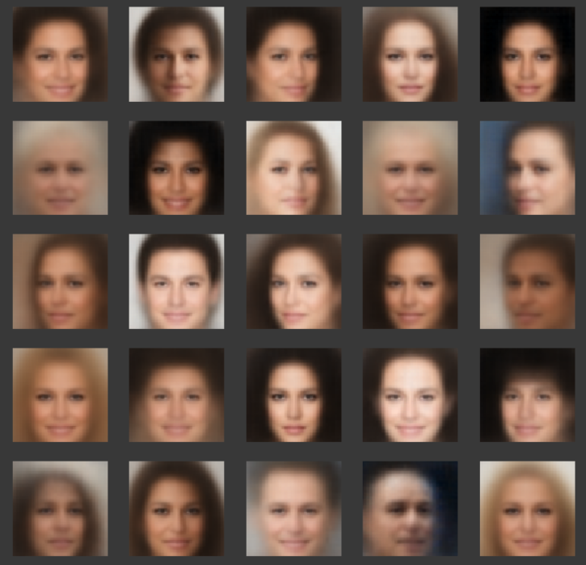
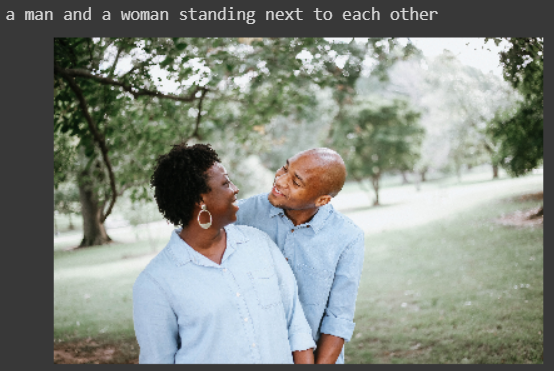

About me
Hello reader, I am Tirth Patel, a computer science undergrad student at Nirma University. This is a small website with a collection of my blogs, projects, and my interests. I mainly use this website to write blogs on new technology that I learn and share the knowledge with everyone. I also clearly suck at web development.
I have been quite interested in Machine Learning and Artificial Intelligence. Over the time, I have also developed interest in Computer Vision. I write articles and blogs on Deep Learning and Data Science on this small website. I also love to program in python and C++. I love open source and contribute to some of the projects that I love and use daily in Python. If you are interested in finding out more about my work, see my projects page and if you are looking to read some random stuff about data science, machine learning, artificial Intelligence, deep learning or computer vision, take a look at my blogs page. Anyways, thanks for reading all this non-sense and not skipping directly to the links on navigation bar ;) For the 0.1% who reached this far, I love watching TV series and my favorites include "The Breaking Bad" and "The Office".
My Blogs
I have written blogs on Data Science, Machine Learning, Deep Learning and Artificial Intelligence. I am a writer at "Towards Data Science" and "Analytics Vidhya". I have also contributed some articles on this website as a standalone and are available at my Blogs page. So, without any further ado, here is a list of articles I have written on Medium:
-
HandCrafting an Artificial Neural Network published in Towards Data Science
In this article, I have implemented a fully vectorized code for ANNs in pure NumPy with L2 and Dropout regularization. I have also implemented Hyper Parameter tuning algorithms with parallel processing of multiple ANNs with different hyper parameters. This work can be found on Medium or you can see my GitHub repository here containing examples of the implemented code.
-
Searching in AI published in Analytics Vidhya
I have created several visualizations of search algorithms used in AI such as DFS, BFS, A*, LRTA*, MA*, IDS, and Bidirectional search. This work was inspired by the book "Artificial Intelligence: A Modern Approach" by Norvig and Russel. The videos of the animations are available on YouTube too! Here is my GitHub repository containing the examples and code used to create animations. Some of the code samples were taken from the project aima-python.
My Projects
I have worked on several projects in the domain of Deep Learning, Machine Learning, Computer Vision and Bayesian Methods for Machine Learning. This project work is a part of many courses and specializations I have completed on Coursera and Udacity. The list of the MOOC courses/specailizations I have completed can be found here. Here, I present a short description of every project I have worked on.
-
Facial Composites
Facial composites are widely used in forensics to generate images of suspects. Since victim or witness usually isn’t good at drawing, computer-aided generation is applied to reconstruct the face attacker. One of the most commonly used techniques is evolutionary systems that compose the final face from many predefined parts.
In this project, I implement an app for creating a facial composite that will be able to construct desired faces without explicitly providing databases of templates. I apply Variational Autoencoders, Gaussian processes, and Bayesian Optimization for this task. -
Image Captioning
I have used TensorFlow's pretrained InceptionNet as a encoder network and dynamic stacked LSTM as a decoder network. All the images provided as an input are converted to vectors of a fixed length and this vectors are a input to the one-to-many LSTM that outputs a english caption for the image. I have used finetuning using Keras for the task for about 30 epochs. It produces reasonable captions while testing on internet images. You can also test an image by uploading it to the internet and running last couple of cells of the notebook.
 -
Variational Auto Encoder on MNIST
In this project, I have implemented a Variational Auto Encoder using TensorFlow that can generate MNIST like images of hand-written images. This is an excellent demonstration of a bayesian generative models.
I have used conditional Variational Auto Encoder which is a variation of normal VAE conditioned on the digit to be generated. This can be used to generate specified digits instead of randomly generating one of the ten digits.
This model is trained for about 30 epochs and model weights are freely available on my google drive.